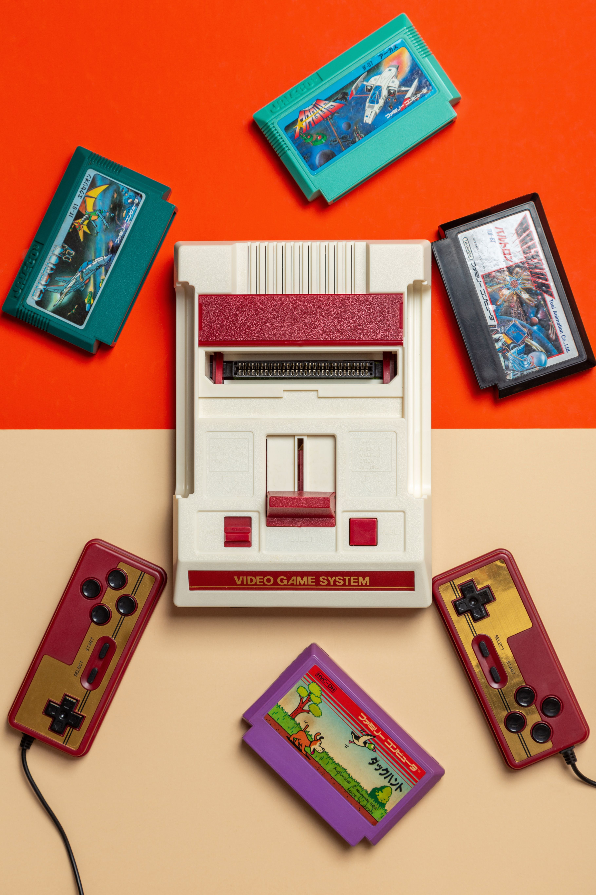

Chad Heaps - IST 250 Portfolio | Click Here To Return To Portfolio Homepage
Selling my collection to help afford my 2026/2027 College Tuition

Credit: Stat Knop on Pexels
While beginning my final semester in college, I realized I needed a bit of extra cash to help afford my tuition. Because of this, I decided that I would need to give up a few of my personal belongings from my collection in order to help pay for college.
Here's a few different forms of media I have for sale!
A wide variety of video games are available, including many PlayStation 4 and PlayStation 5 games at great prices. If you are looking for something a little older, we also have games for systems such as the Atari and Nintendo 64. Please reach out if you would like to discuss any games you are interested in adding to your collection.
I have a smaller collection of CDs and vinyl available, but what I do have is definitely worth checking out to see if anything will pique your interest. I have vinyl records from various musicals as well as the band Twenty One Pilots. For CDs, I have various albums, including Twenty One Pilots limited edition release of Breach and Metallica's Master of Puppets.
Finally, I also have a large collection of DVDs and Blu-rays that would make a great addition to anyone's home media collection. The collection includes movies such as The Lord of the Rings Trilogy and spy classics like 007: Thunderball. I also have a smaller collection of Blu-rays, including Avengers: Endgame, if you want to watch it again before Avengers: Doomsday.
If anything interests you, feel free to reach out at my email
Reach Out At My Email Here